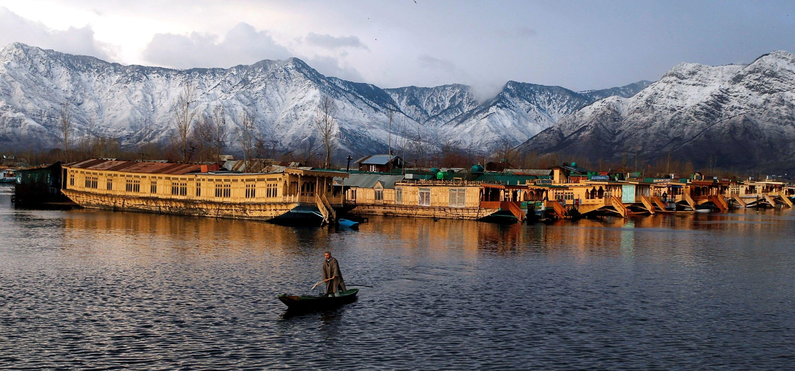
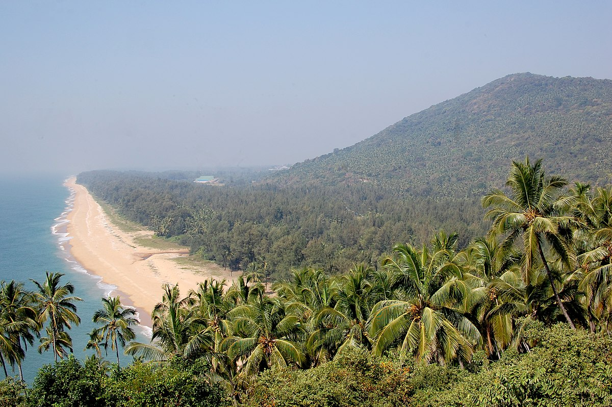
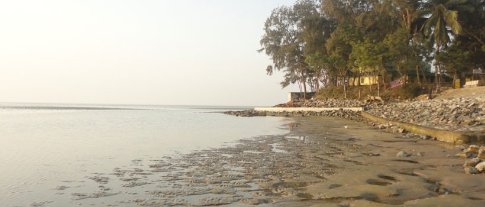

1. Pangong Lake, Ladakh
This lake runs from India to China. More than 60% of the lake lies in China. During the peak winter, this lake freezes and thus, it is best
to visit the lake between May and September. The banks of this lake are cliché camping spots in the state. You can spot many migration birds
too. The lake changes its color throughout the day, based on the position of sun on the sky.

2. Dal lake, Jammu & Kashmir
Dal is a lake in Srinagar, the summer capital of Jammu and Kashmir, India. It is an urban lake, which is the second largest in the
union territory of Jammu and Kashmir. It is integral to tourism and recreation in Kashmir and is named the "Lake of Flowers",
"Jewel in the crown of Kashmir" or "Srinagar's Jewel".The lake is also an important source for commercial operations in fishing
and water plant harvesting.

3. Ezhimala beach, Kerala
Sitting a few kilometres away from Kannur is one of the most beautiful beaches that one has ever witnessed. Named Ezhimala,
this beach is as serene as it can get. This is among the important historical sites sitting in the southern part of the country.
One can hear the instances about this beach in Sangam-era literature and the Hindu epic, Ramayana. This beach has an ancient burial
chamber, majestic caves, and intricately carved pillars for one to explore.

4. Chandipur beach, Odisa
Known as the vanishing beach, the Chandipur Beach is also one of the most unique and unusual beaches in India. Also known as the
magical hide and seek beach, it vanishes away during every ebb tide, i.e. the time period between a high tide and a low tide. This
phenomenon happens twice a day when the beach when the beach totally disappears underwater as if there was no land at that
place previously.